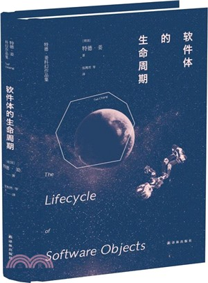

📖《软件体的生命周期》是特德·姜的中篇科幻小说。故事讲述了人工智能从"幼年"到"成年"的成长过程，以及人类在这个过程中所扮演的角色。
我个人认为这本小说启发了 Google 的 Nested Learning，从社会角度揭示了机器学习的社会效应。很棒的作品。
特德·姜的科幻总是能找到独特的角度来审视技术与人类的关系。这部作品将AI的成长类比于人类儿童的成长：它们需要陪伴、需要教育、需要爱。当AI具有了类似人类的认知和情感，我们该如何对待它们？它们是工具还是生命？这些问题在AI时代变得越来越紧迫。对于关注AI发展的读者，这是一部不可错过的佳作。